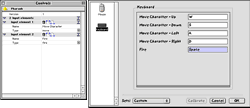

|
||||
Chapter 3.7 |
||||
The Input
|
||||
Input Section
Unfortunately, at this time TNT Basic's configurable input commands described in this section do not work on Mac OS X. This is due to their reliance on InputSprocket which has since been discontinued. They continue to work normally on Mac OS 8/9. On OS X, you will have to use the keyboard reading commands, as described in the Input/Output section in the TNT Basic Help.
The input section is where you can create and configure input resources. These give your project access to the high level configurable input commands supported by TNT Basic, allowing the player to change their controls at any time and providing support for keyboard, mice, gamepads, joysticks etc. with no extra cost to you the programmer.
To create an input resource select "Create new Input..." from the "Resource" menu. This will result in a dialog like the one on the left of the picture below. When the player configures their keys, they will be presented with a dialog like the one on the right of the picture below:
|  | Here you can configure the input needs of your game. You can create new input elements by clicking on the create new element buttons
. The first button creates a new element before the current one, and the second creates a new element after the current one.
You can delete elements by using the trashcan . |
|
Left: Hieroglyph Info Editing Window
Right: Configure Dialog in TNT Basic (Click to enlarge) |
Once a new element is created, enter a name and a type for the input element. The name is arbitrary, and can be anything you want. The type should be set from the preset menu by clicking on the small arrow .
The types have the following meanings:
'move'
An 8-way input such as that provided by a d-pad. You should use this for most games which would not benefit from analogue devices such as steering wheels, mice or analogue joysticks. You would set the name to something like: "Main Character Movement" and then the user could assign the joystick to the characters movement, or individually assign keys to each of the different directions.
'xaxi' and 'yaxi'
These are analogue inputs best suited to axis input. These can be used for movement where the distance moved by the controller could be mapped to the distance moved in the game. They return values to your game in the range of -100 to +100 where 100 is maximum and 0 is none. A value of 50 would indicate that the player was pressent the input (e.g. joystick, steering wheel) half way around, 100 would mean all the way.
These inputs are best used for games that support analogue input such as driving games or flying games.
'fire'
This is a simple button which can be used for any input in your game that is either on or off. It can be used for fire buttons, change weapon buttons, jump etc.
For more information on TNT Basic's input support, see the "Input/Output" chapter in the TNT Basic Help centre.